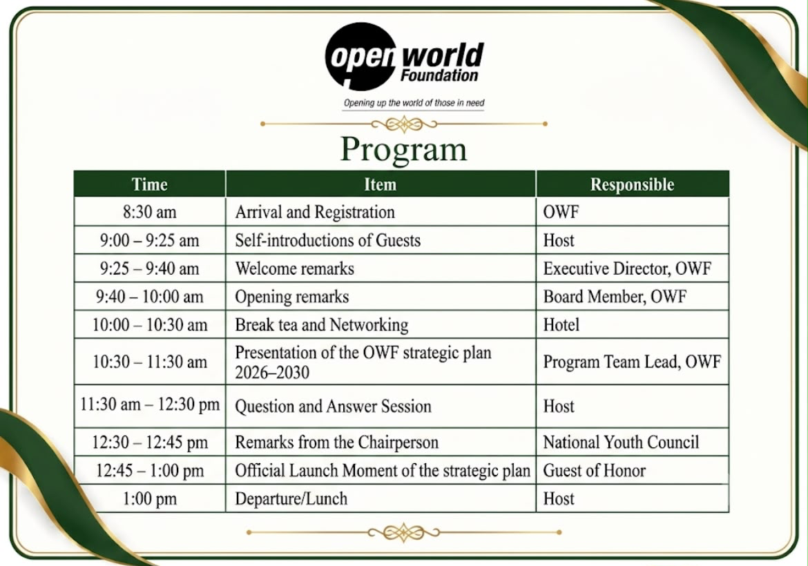

Opening up the world of those in need
Thursday, 30 July 2026 · Welcome! Everything for today is right here.

"Empowerment for self-sustainability." Our roadmap for unlocking practical pathways to health, education and livelihoods — helping vulnerable young people and households move from poverty toward dignity, opportunity, and self-reliance across Karamoja, Busoga, Rwenzori, and Kampala.
📖 Read the Strategic Plan (PDF)